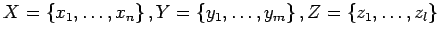
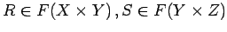
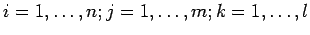
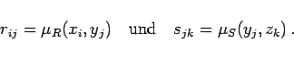
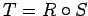
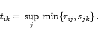
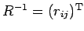

Inhalt Index DeskTop Bronstein

 Algebra und Diskrete Mathematik Fuzzy-Logik Fuzzy-wertige Relationen Fuzzy-Relationenprodukt
Algebra und Diskrete Mathematik Fuzzy-Logik Fuzzy-wertige Relationen Fuzzy-Relationenprodukt


Verwendet man über endlichen Grundbereichen eine Matrixdarstellung analog (5.391b), so läßt sich die Verknüpfung wie folgt motivieren: Es seien gegeben  und  sowie die Matrixdarstellung von R,S in der Form R=(rij) und S=(sjk) mit  sowie
|  | (5.397) |
Wird für die Verknüpfung  die Matrixdarstellung tik gewählt, dann ist
|  | (5.398) |
Als Ergebnis erhält man nicht die übliche Form der Matrixmultiplikation, da die Supremumbildung anstelle der Summenbildung und die Minimumbildung anstelle der Produktbildung zur Anwendung kommen.
| Beispiel |
|
Mit den Darstellungen für rij und sjk sowie mit Gleichung (5.396) kann die inverse Relation R-1 durch die zu (rij) transponierte Matrix  dargestellt werden. |